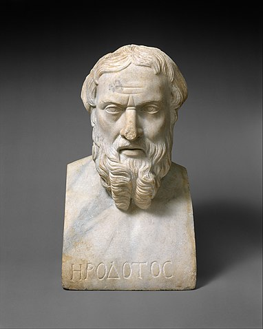
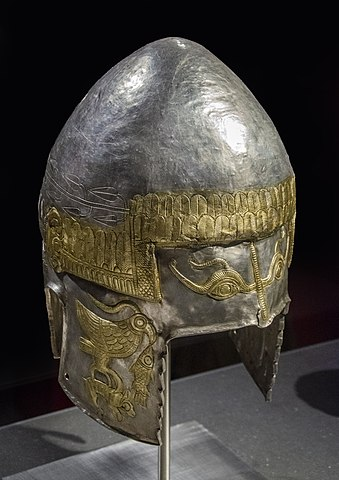
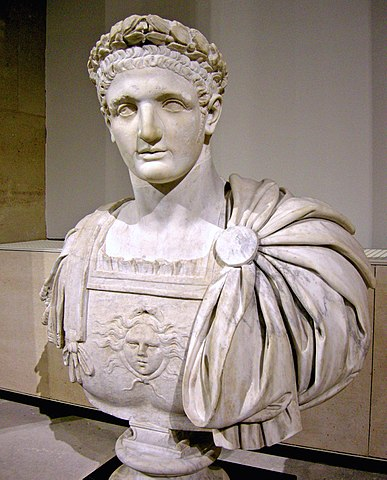
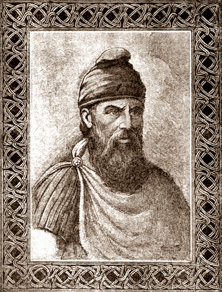
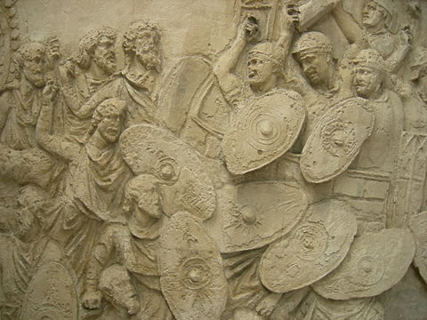
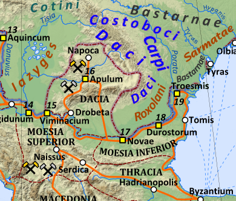

-
440 î.Hr.
Lucrarea Istorii a lui Herodot este prima care îi menționează pe geți și daci ca locuind regiunea care corespunde teritoriului României de azi.
 -
Secolul V î.Hr.
Charnabon, rege poate mitic, domnea peste geți conform lucrării Triptolem a lui Sofocle.

-
Secolul V î.Hr.
Coiful de la Peretu.
 -
339 î.Hr.
Rex Histrianorum, care domnea peste Histria, e menționat de către Trogus Pompeius și Justinus.
-
292 î.Hr.
Regele dac Dromihete îl capturează pe regele trac Lysimachus

-
200 î.Hr.
Căpetenia tracilor Zoltes este menționat ca dușman al cetăților grecești din Dobrogea.
Regatul Daciei era condus de către regele Oroles.
Căpetenia Zalmodegikos domnea în Histria.
Regele get Rhemaxos proteja coloniile grecești din Dobrogea.
-
168 î.Hr.
Regele Rubobostes domnea în Transilvania.
-
Secolul I î.Hr.
Regele Dicomes conducea regatul Daciei.
Regele Roles domnea în Dobrogea.
Regele Dapyx domnea în Dobrogea.
-
82-44 î.Hr.
Regele Burebista conducea regatul Daciei.

-
44-27 î.Hr.
Deceneu este înalt preot al Daciei.

-
29-27 î.Hr.
Regele Zyraxes domnea în nordul și nord-vestul Dobrogei.
-
40-9 î.Hr.
Regele Cotiso domnea în Banat și Oltenia.
-
9 î.Hr.-30 d.Hr.
Regele Comosicus conducea Dacia.
-
68-87
Regele Duras conducea regatul Daciei.
-
86-88
Împăratul roman Domițian pierde războiul cu Dacia.
 -
87-106
Regele Decebal conducea regatul Daciei.
 -
Secolul I
Poetul roman Publius Ovidius Naso menționează lucrări pierdute ca de exemplu un Epithalamium, un cântec funebru, și chiar și o versiune în limba dacă, toate acestea fiind lucrări pierdute.
-
101-102
Împăratul roman Traian declară Primul Război Daco-Roman împotriva Daciei, care se termină cu un tratat de pace nefavorabil romanilor semnat de către regele dac Decebal.
 -
105-106
Pacea este ruptă, regele dac Decebal pierde Al Doilea Război Daco-Roman, iar partea de sud-vest a Daciei devine provincie romană.
-
170/171
Tribul costobocilor invadează teritoriul roman. Neîntâlnind multă opunere, au cotropit și jefuit provinciile Moesia Inferior, Moesia Superior, Tracia (provincie romană), Macedonia (provincie romană) și Achaia (provincie romană)
 -
...